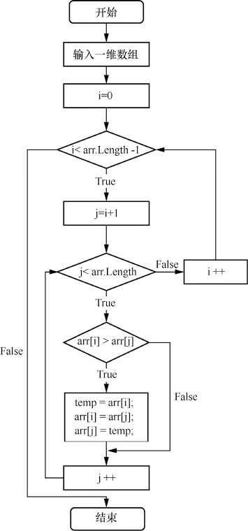
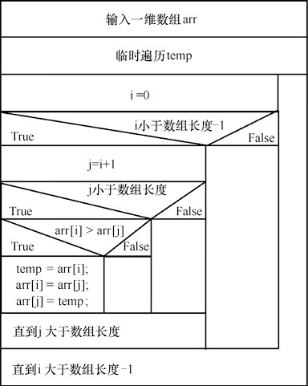
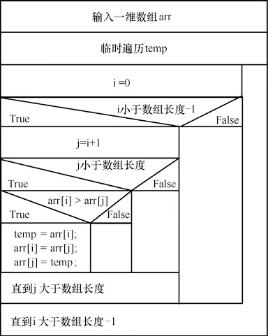
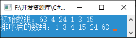

首页 > 编程笔记
C#冒泡排序算法（附带源码）
在程序设计中，经常需要将一组数列进行排序，以方便统计与查询。冒泡排序法是最常用的数组排序算法之一，它排序数组元素的过程总是小数往前放，大数往后放，类似水中气泡往上升的现象，所以称作冒泡排序。
例如，一个拥有 6 个元素的 C# 数组在排序过程中每一次循环的排序过程和结果如图1所示。

图1：6 个元素数组的排序过程
第1轮外层循环时把最大的元素值 63 移动到了最后面（相应地，比 63 小的元素向前移动，类似气泡上升），第2轮外层循环不再比较最后一个元素值 63，因为它已经确认为最大（不需要上升），应该放在最后，需要比较和移动的是其他元素，这次将元素值 24 移动到了 63 的前一个位置。
其他循环以此类推，直至完成排序任务。
创建一个控制台应用程序，使用冒泡排序算法对一维数组中的元素按从小到大的顺序进行排序，C# 代码如下：
1. 基本思想
冒泡排序算法的基本思想是比较相邻的元素值，如果满足条件就交换元素值，把较小的元素移动到数组前面，把大的元素移动到数组后面（也就是交换两个元素的位置），这样较小的元素就像气泡一样从底部上升到顶部。2. 计算过程
冒泡排序算法由双层循环实现，其中外层循环用于控制排序轮数，一般是要排序的数组的长度减一次，因为最后一次循环只剩下一个数组元素，不需要比较，这时数组已经完成排序了。而内层循环主要用于比较数组中每个邻近元素的大小，以确定是否交换位置，比较和交换次数根据排序轮数而减少。例如，一个拥有 6 个元素的 C# 数组在排序过程中每一次循环的排序过程和结果如图1所示。
图1：6 个元素数组的排序过程
第1轮外层循环时把最大的元素值 63 移动到了最后面（相应地，比 63 小的元素向前移动，类似气泡上升），第2轮外层循环不再比较最后一个元素值 63，因为它已经确认为最大（不需要上升），应该放在最后，需要比较和移动的是其他元素，这次将元素值 24 移动到了 63 的前一个位置。
其他循环以此类推，直至完成排序任务。
3. 流程图和代码
冒泡排序算法的传统流程图和 N-S 结构化流程图分别如图 2 和图 3 所示。

图2：冒泡排序算法的传统流程图

图3：冒泡排序算法的 N-S 结构化流程图
图2：冒泡排序算法的传统流程图

图3：冒泡排序算法的 N-S 结构化流程图
创建一个控制台应用程序，使用冒泡排序算法对一维数组中的元素按从小到大的顺序进行排序，C# 代码如下：
static void Main(string[] args)
{
int[] arr = new int[] { 63, 4, 24, 1, 3, 15 };//定义一个一维数组，并赋值
Console.Write("初始数组：");
foreach (int m in arr) //循环遍历定义的一维数组，并输出其中的元素
Console.Write(m + " ");
Console.WriteLine();
//定义一个int类型的变量，用来存储新的数组元素
int temp;
for (int i = 0; i < arr.Length - 1; i++) //根据数组下标的值遍历数组元素
{
for (int j = i + 1; j < arr.Length; j++)
{
if (arr[i] > arr[j]) //判断前后两个数的大小
{
temp = arr[i]; //将大的元素的值赋给定义的int变量
arr[i] = arr[j]; //将后一个元素的值赋给前一个元素
arr[j] = temp; //将int变量中存储的值赋给后一个元素
}
}
}
Console.Write("排序后的数组：");
foreach (int n in arr) //循环遍历排序后的数组元素并输出
Console.Write(n + " ");
Console.ReadLine();
}
运行程序，效果如图4所示。

图4：冒泡排序法的运行结果
图4：冒泡排序法的运行结果
关注公众号「站长严长生」，在手机上阅读所有教程，随时随地都能学习。内含一款搜索神器，免费下载全网书籍和视频。

微信扫码关注公众号